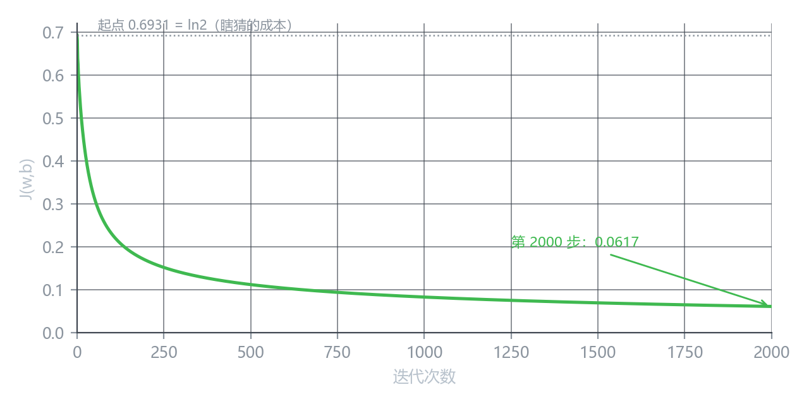
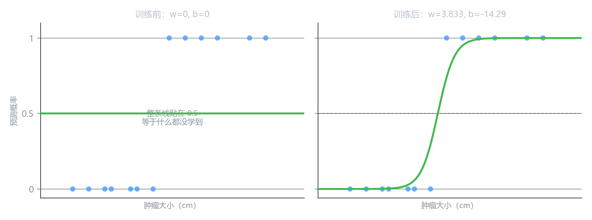

逻辑回归的梯度下降
公式已经有了，现在真跑
上一课推出了梯度：
\frac{\partial J}{\partial w} = \frac{1}{m}\sum_{i=1}^{m}\bigl(f_i - y_i\bigr)x_i, \qquad \frac{\partial J}{\partial b} = \frac{1}{m}\sum_{i=1}^{m}\bigl(f_i - y_i\bigr)
其中 f_i = g(wx_i + b)，而 g 就是 Sigmoid。
更新规则和第 2 章一模一样：
w \leftarrow w - \alpha\frac{\partial J}{\partial w}, \qquad b \leftarrow b - \alpha\frac{\partial J}{\partial b}
两个式子重复执行，直到收敛。
这一课不推任何东西，就把这套式子真的转起来，看它到底发生什么。
第 0 步：起点在哪
参数从零开始：w = 0，b = 0。
这时候 z = 0，g(0) = 0.5 ——模型对每个样本都说”50% 是良性”，等于什么都没判断。
损失是多少？13 个样本里 7 个恶性、6 个良性：
J = -\frac{1}{13}\left[7\log(1-0.5) + 6\log 0.5\right] = \log 2 = \mathbf{0.6931}
\log 2 就是“完全瞎猜”的成本。
二分类问题里，一个什么都不学的模型损失必然停在 0.6931 附近。所以训练开始后，J 只要还贴着这个数，就说明模型还没学到任何东西。
这个数可以当成一把尺子：训练有没有真的起作用，先看 J 有没有掉到 0.6931 以下。
第 1 步：手算一次
先算梯度。f_i = 0.5 对所有 i 都成立，所以每个样本的残差都是 0.5 - y_i：
| 前 7 个（y=0） | 后 6 个（y=1） | |
|---|---|---|
| 残差 f-y | +0.5 | -0.5 |
于是
\frac{\partial J}{\partial w} = \frac{1}{13}\left[\sum_{y=0}0.5x_i + \sum_{y=1}(-0.5)x_i\right] = -0.634615
\frac{\partial J}{\partial b} = \frac{1}{13}\left[7 \times 0.5 + 6 \times (-0.5)\right] = \frac{0.5}{13} = 0.038462
取 \alpha = 0.5，更新：
w = 0 - 0.5 \times (-0.634615) = \mathbf{0.3173} b = 0 - 0.5 \times 0.038462 = \mathbf{-0.0192}
新损失 J = 0.680968。
从 0.6931 掉到 0.6810。 掉得不多，但方向对了。
\left|\dfrac{\partial J}{\partial w}\right| = 0.63，而 \left|\dfrac{\partial J}{\partial b}\right| = 0.038 ——差了十六倍。
原因还是那个：w 的梯度里多乘了一个 x，而 x 是 1 到 7 之间的数。
所以一开始 w 大步走、b 几乎不动。第 3 章那个”两个参数抢一个 \alpha“的问题，在逻辑回归里一模一样。
一直跑下去
把上面那一步重复两千次：

| 迭代次数 | w | b | J |
|---|---|---|---|
| 0 | 0.0000 | 0.0000 | 0.69315 |
| 1 | 0.3173 | −0.0192 | 0.68097 |
| 5 | 0.3033 | −0.3656 | 0.59010 |
| 10 | 0.2934 | −0.7537 | 0.52600 |
| 50 | 0.7922 | −2.7151 | 0.31448 |
| 100 | 1.1448 | −4.1084 | 0.23071 |
| 500 | 2.3070 | −8.5484 | 0.11258 |
| 2000 | 3.8327 | −14.2882 | 0.06171 |
损失从 0.6931 降到 0.0617，降了十一倍。
注意 w 那一列：第 1 步跳到 0.3173，第 2 步又退回 0.0833，第 5 步才 0.3033……前十步基本在原地打转。
因为 b 还没跟上。 等 b 从 0 慢慢走到 −2 以后，w 才开始稳步增长。
训练前后

左边是起点：整条曲线贴在 0.5，对任何输入都报”一半一半”。
右边是训练结果：w = 3.8327，b = -14.2882。曲线在 3.5 到 4.0 之间快速抬升，把两类分开了。
决策边界在 z = 0 处：
x = -\frac{b}{w} = \frac{14.2882}{3.8327} = \mathbf{3.73 \text{ cm}}
和图中曲线穿过 0.5 的位置一致。
两个必须知道的坑
坑一：\alpha 太大会先冲过头
同样是这两千步，把 \alpha 从 0.5 改成 1.0，前几步的 J 是这样：
| 迭代 | \alpha=0.5 | \alpha=1.0 |
|---|---|---|
| 0 | 0.69315 | 0.69315 |
| 1 | 0.68097 | 0.90755 |
| 5 | 0.59010 | 0.67475 |
| 10 | 0.52600 | 1.13076 |
\alpha = 1.0 时，损失先涨到 1.13 才回来 —— 比起点还高。
它最后还是收敛了，但这说明步长已经接近危险边缘。第 2 章那句”\alpha 太大会震荡”在这里同样成立。
坑二：特征缩放照样有用
x 的范围是 1 到 7，和 b 的量级不对齐。把 x 标准化之后再跑，同样 \alpha = 0.5：
| 达到 J < 0.07 需要的步数 | |
|---|---|
| 原始 x | 1503 步 |
| 标准化后 | 329 步 |
快了 4.6 倍。 第 3 章那套结论原封不动适用。
实现只有两部分
官方材料把这个算法拆得很清楚：一个循环 + 一个算梯度的函数。
算梯度
def compute_gradient_logistic(X, y, w, b):
m, n = X.shape
dj_dw = np.zeros(n)
dj_db = 0.0
for i in range(m):
f = sigmoid(X[i] @ w + b) # 这一条的预测
err = f - y[i] # 残差
for j in range(n):
dj_dw[j] += err * X[i, j] # 残差乘特征
dj_db += err
return dj_dw / m, dj_db / m循环
def gradient_descent(X, y, w, b, alpha, num_iters):
for i in range(num_iters):
dj_dw, dj_db = compute_gradient_logistic(X, y, w, b)
w = w - alpha * dj_dw
b = b - alpha * dj_db
return w, b注意顺序：先算完 \dfrac{\partial J}{\partial w} 和 \dfrac{\partial J}{\partial b}，再一起更新。
如果先更新了 w，然后拿新的 w 去算 \dfrac{\partial J}{\partial b}，那算出来的就不是同一个点的梯度了——这叫非同步更新，会让收敛变慢甚至出错。
代码里 dj_dw, dj_db = compute_gradient(...) 这一行同时拿到两个梯度，就是为了保证这一点。
和第 2 章比一比
把两个算法摆在一起看，会发现它们的骨架完全一样：
| 线性回归 | 逻辑回归 | |
|---|---|---|
| 预测 | f = wx + b | f = g(wx + b) |
| 损失 | \frac{1}{2m}\sum(f-y)^2 | -\frac{1}{m}\sum[y\log f + (1-y)\log(1-f)] |
| 梯度 | \frac{1}{m}\sum(f-y)x | \frac{1}{m}\sum(f-y)x |
| 更新 | w \leftarrow w - \alpha\frac{\partial J}{\partial w} | 同左 |
| 循环 | 重复直到收敛 | 同左 |
只有前两行变了。 梯度的形式、更新规则、循环结构，一个字都没改。
这就是为什么逻辑回归学起来不费劲——它只是在线性回归外面套了一层 g，再把损失换成配得上分类的那一个。
一个诚实的补充
这 13 个样本是线性可分的：所有恶性都在 3.5 cm 以下，所有良性都在 4.0 cm 以上。
这种数据上，逻辑回归的最优解在无穷远处——w 越大、b 越负，分得越干净，损失越接近 0 但永远到不了 0。
所以上表里 J 到第 2000 步还在缓慢下降，不是没收敛好，是本来就没有一个有限的终点。真实数据很少这么干净，通常会有重叠，那时 J 会收敛到一个正数。
核心概念
| 概念 | 内容 |
|---|---|
| 起点损失 | \log 2 = 0.6931，等于”完全瞎猜”的成本 |
| 梯度形式 | \frac{1}{m}\sum(f_i-y_i)x_i，和线性回归同形 |
| 同步更新 | 两个梯度都算完再一起更新，不能边算边改 |
| \alpha 太大 | 损失会先冲到起点之上再回来 |
| 特征缩放 | 逻辑回归同样需要；本例快 4.6 倍 |
| 线性可分 | 最优解在无穷远，J 只能无限趋近 0 |
下一课
第 4 章到这里，逻辑回归的整套就齐了：模型、损失、梯度、训练。
下一课换一个角度：从概率和最大似然重新看一遍交叉熵，然后过渡到多分类——Softmax。